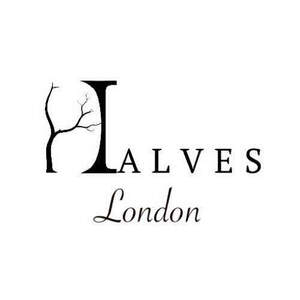
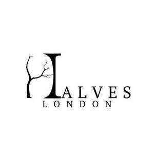

Trade Mark Journal No.2025/037 12 September 2025
UK00004244250 5 August 2025 (18,25)
Mark 1

Mark 2

- Class 18
- Tote bags; Duffel bags; Duffle bags; Bags; Carry-all bags; Grocery tote bags; Drawstring bags; Cross-body bags; Crossbody bags; Carry-on bags; Sling bags; Duffel bags for travel; Toiletry bags; Shoulder bags; Bucket bags; Belt bags and hip bags; Luggage bags; Nose bags [feed bags]; Clutch bags; Kit bags; Carrying bags; Nappy bags; Shoe bags; Belt bags; Cloth bags; Messenger bags; Leather bags; Umbrella bags; Canvas bags; Garment bags; Leather shopping bags; Tool bags of leather, empty; Souvenir bags; Mesh shopping bags; Mesh bags for shopping; Canvas shopping bags; Waterproof bags; Toilet bags; Make-up bags; Makeup bags; Attaché bags; Suit bags; Hand bags; Bags [envelopes, pouches] of leather, for packaging; Bags [envelopes, pouches] of leather for packaging; Bags [envelopes, pouches] for packaging of leather; Bum bags; Reusable shopping bags; Bags for clothes; Baby carrying bags; Gym bags; Overnight bags; Leather bags and wallets; Courier bags; Roll bags; Book bags; Wheeled bags; Tool bags, empty; Shoe bags for travel; String bags for shopping; Cosmetic bags; Travel bags; Bags for travel; Barrel bags; Boot bags; Waist bags; Gladstone bags; Camping bags; All-purpose carrying bags; Garment carriers; Garment bags for travel; Bags (Garment -) for travel; Travel garment covers; Garment bags for travel made of leather; Flexible bags for garments; Bags (Game -) [hunting accessories]; Game bags [hunting accessories]; Bags for sports clothing; Straps for handbags; Holdalls for sports clothing; Tie cases; Tie cases for travel; Draw reins; Harness straps; Straps (Harness -); Leather twist; Bridoons; Beachbags; Head-stalls; Briefbags; Pouchettes; Ankle-mounted wallets; Keycases; Briefcase-type portfolios; Fur-skins; Notecases; Pocket wallets; Wallets (Pocket -); wallet chains; Wallets; Card wallets; Leather credit card wallets; Wallets with card compartments; Leather wallets; Card wallets [leatherware]; Credit card wallets; Key wallets; Nappy wallets; Credit card cases [wallets]; Handbags, purses and wallets; Wrist-mounted wallets; Business card holders in the nature of wallets; Holders in the nature of wallets for keys; Wallets including card holders; Coin purse frames; Wallets incorporating card holders; Luggage, bags, wallets and other carriers; Leather coin purses; Wallets of precious metal; Leather credit card holder; Purse frames [handbags]; Wallets for attachment to belts; Wallets, not of precious metal; Wallets [not of precious metal]; Purse frames; Coin purses; Handbag straps; Straps for coin purses; Pocketbooks [handbags]; Leather purses; Leather credit card cases; Credit card holders made of leather; Pocketbooks; Purses; Credit card holders made of imitation leather; Leather suitcases; Purses, not of precious metal [handbags]; Coin purses, not of precious metals; Clutch purses [handbags]; Clothes for animals; Clothing for animals; Sheets of imitation leather for use in manufacture; Furniture coverings of leather; Coverings (Furniture -) of leather; Leather for furniture; Leather; Leather and imitation leather; Leather and imitations of leather; Leather cloth; Tanned leather; Saddlery of leather; Leather handbags; Laces (Leather -); Leather laces; Synthetic leather; Leather for shoes; Leather straps; Straps (Leather -); Leather thongs; Leather briefcases; Boxes of leather or leather board; Vegan leather; Studs of leather; Imitation leather; Straps of leather [saddlery]; Leather pouches; Pouches of leather; Leather cord; Leather cords; Leather leashes; Imitation leather bags; Briefcases [leather goods]; Handbags made of leather; All-purpose leather straps; Briefcases made of leather; Leather boxes; Boxes of leather; Leather cases; Trimmings of leather for furniture; Furniture (Leather trimmings for -); Leather trimmings for furniture; Labels of leather; Leather shoulder belts; Belts (Leather shoulder -); Key-cases of leather and skins; Bags made of leather; Bags made of imitation leather; Leather shoulder straps; Chin straps, of leather; Knitted bags; Carriers for suits, shirts and dresses; Carriers for suits, for shirts and for dresses; Suit carriers; Protective suit carriers; Handbags for men; Small bags for men; Handbags for ladies; Ladies handbags; All purpose sports bags; Umbrellas for children; Small clutch purses; Purses [leatherware]; Multi-purpose purses; Handbags; Wash bags for carrying toiletries; Knapsacks; School knapsacks; Backpacks [rucksacks]; Backpacks; Carry-on suitcases; Haversacks; Backpacks for carrying infants; Trunks [luggage]; Straps for suitcases; Luggage; Trunks and traveling bags; Small rucksacks; Small backpacks; Suitcases; Trunks and travelling bags; Schoolbags; Wheeled luggage; Trunks and suitcases; Suitcase handles; Handles (Suitcase -); Trolley duffels; Leather luggage straps; Toiletry bags sold empty; Baby backpacks; Bags for carrying pets; Wheeled suitcases; Traveling bags; Lockable luggage straps; Luggage tags [leatherware]; Travelling bags [leatherware]; Satchels; Travelling bags; Leather luggage tags.
- Class 25
- Leather garments; Leather clothing; Clothing of leather; Leather (Clothing of -); Jacket liners; Blouson jackets; Jackets; Sleeveless jackets; Sleeved jackets; Windproof jackets; Fleece jackets; Suede jackets; Leather jackets; Denim jackets; Rainproof jackets; Bomber jackets; Quilted jackets [clothing]; Waterproof jackets; Jackets [clothing]; Men's and women's jackets, coats, trousers, vests; Camouflage jackets; Sheepskin jackets; Knit jackets; Motorcycle jackets; Wind-resistant jackets; Weatherproof jackets; Fur jackets; Shell jackets; Padded jackets; Snowboard jackets; Reversible jackets; Ski jackets; Rain jackets; Casual jackets; Riding jackets; Sweat jackets; Warm-up jackets; Polar fleece jackets; Fur coats and jackets; Trousers of leather; Waterproof trousers; Dinner jackets; Heavy jackets; Leather pants; Hunting jackets; Bed jackets; Light-reflecting jackets; Waterproof pants; Jackets being sports clothing; Jackets (Stuff -) [clothing]; Stuff jackets [clothing]; Safari jackets; Smoking jackets; Trousers; Down jackets; Fishing jackets; Fleece vests; Vest tops; Sports jackets; Long jackets; Pants; Gloves [clothing]; Gloves as clothing; Outerwear; Waistcoats [vests]; Duffle coats; Leather suits; Suits of leather; Leather waistcoats; Leather coats; Trench coats; Duffel coats; Overcoats; Coats; Collar liners for protecting clothing collars; Heavy coats; Top coats; Overshirts; Turtleneck shirts; Turtleneck pullovers; Corduroy trousers; Denim pants; Short-sleeved shirts; Long-sleeved shirts; Trousers shorts; Sleeveless pullovers; Fleece shorts; Corduroy pants; Sweatpants; Chino pants; Dress pants; Coats of denim; Hooded sweatshirts; Hooded sweat shirts; Men's dress socks; Shorts [clothing]; Quilted vests; Hooded tops; Shirts; Camouflage vests; Camouflage pants; Parts of clothing, footwear and headgear; Headbands [clothing]; Headbands for clothing; Bra straps [parts of clothing]; Combinations [clothing]; Visors [clothing]; Belts [clothing]; Belts for clothing; Linings (Ready-made -) [parts of clothing]; Ready-made linings [parts of clothing]; Mufflers [clothing]; Muffs [clothing]; Gloves for apparel; Party hats [clothing]; Caps; Caps with visors; Caps [headwear]; Caps being headwear; Skull caps; Baseball caps; Swimming caps [bathing caps]; Knitted caps; Cycling caps; Waterpolo caps; Sports caps and hats; Bucket caps; Sports caps; Swim caps; Flat caps; Golf caps; Beanies; Beanie hats; Hats; Bonnets [headwear]; Bobble hats; Baseball hats; Bow ties; Ties; Ascots (ties); Silk ties; Ties [clothing]; Knot caps; Bolo ties with precious metal tips; Neckwear; Dress suits; Shoes with hook and pile fastening tapes; Woven shirts; Tuxedo belts; Skirt suits; Down suits; Jumper suits; Shirt yokes; Yokes (Shirt -); Wind-jackets; Womens' outerclothing; Neckerchieves; Ladies' outerclothing; Children's outerclothing; Babies' outerclothing; Over-trousers; Outerclothing; Pocket kerchiefs; Pockets for clothing; Pocket squares [clothing]; Pocket squares; Clothes; Furs [clothing]; Belts (Money -) [clothing]; Clothing for children; Clothing for babies; Infant clothing; Baby clothes; Hoods [clothing]; Leather belts [clothing]; Playsuits [clothing]; Plush clothing; Leather shoes; Leather slippers; Leather dresses; Leather headwear; Clothing of imitations of leather; Leather (Clothing of imitations of -); Belts made of leather; Imitation leather dresses; Belts made from imitation leather; Clothing made of leather; Slippers made of leather; Shoes; Insoles for shoes and boots; Insoles [for shoes and boots]; High-heeled shoes; Dress shoes; Sneakers [footwear]; Slip-on shoes; Tongues for shoes and boots; Tennis shoes; Jogging shoes; Walking shoes; Rubber shoes; Shoes soles for repair; Pullstraps for shoes and boots; Esparto shoes or sandles; Basketball shoes; Athletic shoes; Running shoes; Volleyball shoes; Sandals and beach shoes; Soccer shoes; Sneakers; Waterproof shoes; Shoe soles; Dance shoes; Snowboard shoes; Canvas shoes; Cycling shoes; Shoes for leisurewear; Golf shoes; Footwear soles; Sport shoes; Boxing shoes; Leisure shoes; Shoes for infants; Women's shoes; Footwear; Pumps [footwear]; Inner socks for footwear; Basketball sneakers; Socks; Socks and stockings; Slipper socks; Anklets [socks]; Men's socks; Socks for men; Pop socks; Slippers; Lace boots; Underpants; Boots; Suits; Shirts for suits; One-piece suits; Men's suits; Women's suits; Waterproof suits for motorcyclists; Dress shirts; Tuxedos; Denims [clothing]; Jogging bottoms [clothing]; Short-sleeve shirts; Open-necked shirts; Collared shirts; Short-sleeved T-shirts; Polo shirts; Corduroy shirts; Camouflage shirts; Mock turtleneck shirts; Sweat shirts; Casual shirts; Football shirts; Golf shirts; T-shirts; Sport shirts; Tennis shirts; Tee-shirts; Jerseys [clothing]; Embroidered clothing; Shorts; Sweat pants; American football shirts; Polo sweaters; Golf trousers; Casual trousers; Trouser socks; Footwear for men and women; Clothing for men, women and children; Footwear for men; Coats for men; Outerclothing for men; Coats for women; Footwear for women; Bathing suits for men; Suspender belts for men; Trousers for children; Outerclothing for boys; Outerclothing for girls; Soccer shirts; Boy shorts [underwear]; Bermuda shorts; Boxer shorts; Boxing shorts; Gym shorts; Golf shorts; Short trousers; Jeans; Jogging pants; Stretch pants; Sports pants; Cargo pants; Pajama bottoms; Tracksuit bottoms; Men's underwear.
Halves Limited